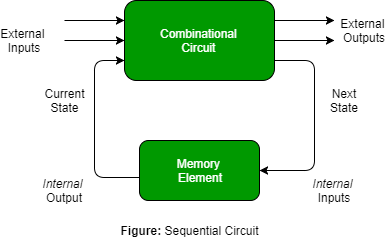

一种顺序电路组合逻辑电路，由输入变量（X），逻辑门（计算电路）和输出变量（Z）组成。
组合电路仅根据输入变量产生输出，但顺序电路根据电流输入和先前的输入变量产生输出。 这意味着时序电路包括能够存储二进制信息的存储元件。 该二进制信息定义了那时的时序电路的状态。 一种能够存储一位信息的锁存器。

如图所示，组合逻辑有两种类型的输入：
- 外部输入不受电路控制。
- 内部输入是先前输出状态的函数。
辅助输入是由存储元件产生的状态变量，其中辅助输出是存储元件的激励。
时序电路的类型 -有两种类型的时序电路：
- 异步时序电路 -这些电路不使用时钟信号，而是使用输入脉冲。 这些电路比同步时序电路更快，因为存在时钟脉冲并且当输入信号发生变化时立即改变它们的状态。 当操作速度很重要且独立于内部时钟脉冲时，我们使用异步时序电路。

但是这些电路设计起来比较困难 ，输出不确定 。
- 同步时序电路 -这些电路使用时钟信号和电平输入（或脉冲）（限制脉冲宽度和电路传播）。 输出脉冲的持续时间与钟控时序电路的时钟脉冲相同。 由于它们等待下一个时钟脉冲到达以执行下一个操作，因此与异步相比，这些电路比较慢 。 电平输出在输入脉冲开始时改变状态，并保持在该状态直到下一个输入或时钟脉冲。
我们在同步计数器，触发器和MOORE-MEALY状态管理机器的设计中使用同步时序电路。
我们使用顺序电路来设计计数器，寄存器，RAM，MOORE / MEALY机器和其他状态保持机器。
GATE CS Corner问题
练习以下问题将帮助您测试您的知识。 所有问题都是在前几年的GATE或GATE Mock Tests中提出的。 强烈建议您练习它们。
参考文献 -
顺序电路
顺序逻辑 - 维基百科